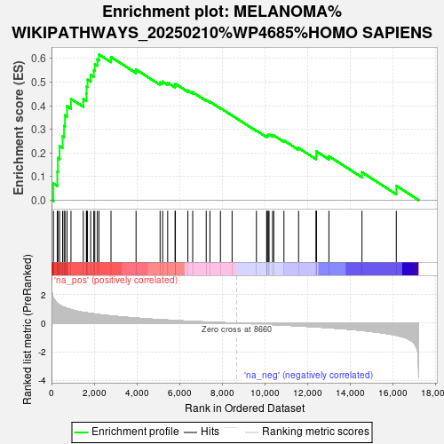

| | | Dataset | Tumour_vs_PDO |
| Phenotype | NoPhenotypeAvailable |
| Upregulated in class | na_pos |
| GeneSet | MELANOMA%WIKIPATHWAYS_20250210%WP4685%HOMO SAPIENS |
| Enrichment Score (ES) | 0.6172282 |
| Normalized Enrichment Score (NES) | 2.1545975 |
| Nominal p-value | 0.0 |
| FDR q-value | 0.0013348836 |
| FWER p-Value | 0.017 |
Table: GSEA Results Summary

Fig 1: Enrichment plot: MELANOMA%WIKIPATHWAYS_20250210%WP4685%HOMO SAPIENS
Profile of the Running ES Score & Positions of GeneSet Members on the Rank Ordered List
| SYMBOL | RANK IN GENE LIST | RANK METRIC SCORE | RUNNING ES | CORE ENRICHMENT | | 1 | CALM1 | 91 | 1.759 | 0.0703 | Yes |
| 2 | CDKN1A | 273 | 1.407 | 0.1203 | Yes |
| 3 | E2F2 | 299 | 1.377 | 0.1781 | Yes |
| 4 | MDM2 | 377 | 1.280 | 0.2286 | Yes |
| 5 | HRAS | 520 | 1.159 | 0.2702 | Yes |
| 6 | DDB2 | 590 | 1.121 | 0.3143 | Yes |
| 7 | PIK3R2 | 632 | 1.097 | 0.3591 | Yes |
| 8 | GADD45A | 726 | 1.039 | 0.3984 | Yes |
| 9 | PTEN | 912 | 0.956 | 0.4287 | Yes |
| 10 | CCND1 | 1489 | 0.765 | 0.4280 | Yes |
| 11 | BAD | 1635 | 0.729 | 0.4509 | Yes |
| 12 | BAX | 1642 | 0.727 | 0.4818 | Yes |
| 13 | KDR | 1687 | 0.718 | 0.5102 | Yes |
| 14 | LAMTOR3 | 1835 | 0.684 | 0.5310 | Yes |
| 15 | MAPK3 | 1981 | 0.653 | 0.5506 | Yes |
| 16 | RAF1 | 2028 | 0.646 | 0.5757 | Yes |
| 17 | KRAS | 2147 | 0.622 | 0.5956 | Yes |
| 18 | PIK3R3 | 2222 | 0.604 | 0.6172 | Yes |
| 19 | CALML4 | 2787 | 0.512 | 0.6063 | No |
| 20 | PAK1 | 3961 | 0.358 | 0.5533 | No |
| 21 | MAPK1 | 5087 | 0.249 | 0.4984 | No |
| 22 | RAC1 | 5206 | 0.238 | 0.5018 | No |
| 23 | CDK6 | 5442 | 0.218 | 0.4975 | No |
| 24 | KIT | 5787 | 0.188 | 0.4855 | No |
| 25 | ERBB4 | 5804 | 0.186 | 0.4926 | No |
| 26 | GADD45G | 6387 | 0.141 | 0.4647 | No |
| 27 | CREB1 | 6615 | 0.126 | 0.4569 | No |
| 28 | NF1 | 7248 | 0.082 | 0.4235 | No |
| 29 | MAP2K2 | 7420 | 0.071 | 0.4166 | No |
| 30 | PIK3CD | 7914 | 0.043 | 0.3897 | No |
| 31 | FOS | 8459 | 0.012 | 0.3585 | No |
| 32 | CDK4 | 9599 | -0.052 | 0.2943 | No |
| 33 | SOS1 | 10078 | -0.081 | 0.2699 | No |
| 34 | GADD45B | 10101 | -0.082 | 0.2722 | No |
| 35 | BRAF | 10107 | -0.083 | 0.2754 | No |
| 36 | SOS2 | 10158 | -0.087 | 0.2762 | No |
| 37 | RB1 | 10192 | -0.089 | 0.2781 | No |
| 38 | GRB2 | 10357 | -0.100 | 0.2729 | No |
| 39 | ARAF | 10410 | -0.104 | 0.2743 | No |
| 40 | BAK1 | 10889 | -0.139 | 0.2524 | No |
| 41 | PIK3R1 | 11574 | -0.192 | 0.2208 | No |
| 42 | POLK | 12394 | -0.265 | 0.1844 | No |
| 43 | CDKN2A | 12408 | -0.266 | 0.1951 | No |
| 44 | MAP2K1 | 12410 | -0.266 | 0.2065 | No |
| 45 | E2F3 | 12995 | -0.323 | 0.1863 | No |
| 46 | SHC2 | 14544 | -0.511 | 0.1180 | No |
| 47 | AKT3 | 16152 | -0.849 | 0.0608 | No |
Table: GSEA details [plain text format]
Fig 2: MELANOMA%WIKIPATHWAYS_20250210%WP4685%HOMO SAPIENS: Random ES distribution
Gene set null distribution of ES for MELANOMA%WIKIPATHWAYS_20250210%WP4685%HOMO SAPIENS